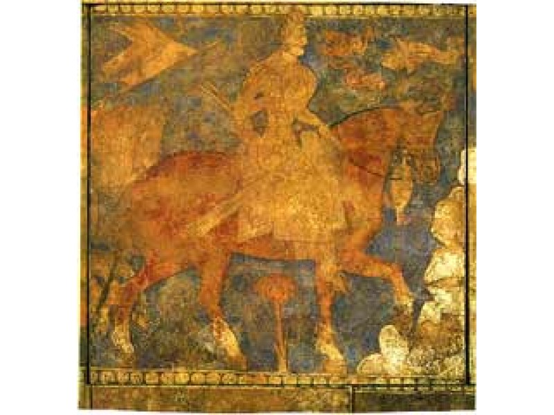

| HOME | HISTORY | PEOPLE | CULTURE | CITIES | GALLERY | AUTHORS |
The earliest recorded history of the region dates back to about 500 BCE when much, if not all, of modern Tajikistan was part of the Achaemenid Empire. Some authors have also suggested that in the 7th and 6th century BCE parts of modern Tajikistan, including territories in the Zeravshan valley, formed part of Kambojas before it became part of the Achaemenid Empire. After the region's conquest by Alexander the Great it became part of the Greco-Bactrian Kingdom, a successor state of Alexander's empire. Northern Tajikistan (the cities of Khujand and Panjakent) was part of Sogdia, a collection of city-states which was overrun by Scythians and Yuezhi nomadic tribes around 150 BCE. The Silk Road passed through the region and following the expedition of Chinese explorer Zhang Qian during the reign of Wudi (141-87 BCE) commercial relations between Han China and Sogdiana flourished. Sogdians played a major role in facilitating trade and also worked in other capacities, as farmers, carpetweavers, glassmakers, and woodcarvers. The Kushan Empire, a collection of Yuezhi tribes, took control of the region in the first century CE and ruled until the 4th century CE during which time Buddhism, Nestorian Christianity, Zoroastrianism, and Manichaeism were all practised in the region. Later the Hephthalite Empire, a collection of nomadic tribes, moved into the region and Arabs brought Islam in the early eighth century. Central Asia continued in its role as a commercial crossroads, linking China, the steppes to the north, and the Islamic heartland.  It was temporarily under the control of the Tibetan empire and Chinese from 650-680 and then under the control of the Umayyads in 710. The Samanid Empire, 819 to 999, restored Persian control of the region and enlarged the cities of Samarkand and Bukhara (both cities are today part of Uzbekistan) which became the cultural centres of Iran and the region was known as Khorasan. The Kara-Khanid Khanate conquered Transoxania (which corresponds approximately with modern-day Uzbekistan, Tajikistan, southern Kyrgyzstan and southwest Kazakhstan) and ruled between 999-1211. Their arrival in Transoxania signalled a definitive shift from Iranian to Turkic predominance in Central Asia, but gradually the Kara-khanids became assimilated into the Perso-Arab Muslim culture of the region. During Genghis Khan's invasion of Khwarezmia in the early 13th century the Mongol Empire took control over nearly all of Central Asia. In less than a century the Mongol Empire broke up and modern Tajikistan came under the rule of the Chagatai Khanate. Tamerlane created the Timurid dynasty and took control of the region in the 14th century. Modern Tajikistan fell under the rule of the Khanate of Bukhara during the 16th century and with the empire's collapse in the 18th century it came under the rule of both the Emirate of Bukhara and Khanate of Kokand. The Emirate of Bukhara remained intact until the 20th century but during the 19th century, for the second time in world history, a European power (the Russian Empire) began to conquer parts of the region.
After the Russian Revolution of 1917 guerrillas throughout Central Asia, known as basmachi, waged a war against Bolshevik armies in a futile attempt to maintain independence. The Bolsheviks prevailed after a four-year war, in which mosques and villages were burned down and the population heavily suppressed. Soviet authorities started a campaign of secularisation, practising Islam, Judaism, and Christianity was discouraged and repressed, and many mosques, churches, and synagogues were closed. As a consequence of the conflict and Soviet agriculture policies, Central Asia, Tajikistan included, suffered a famine that claimed many lives.